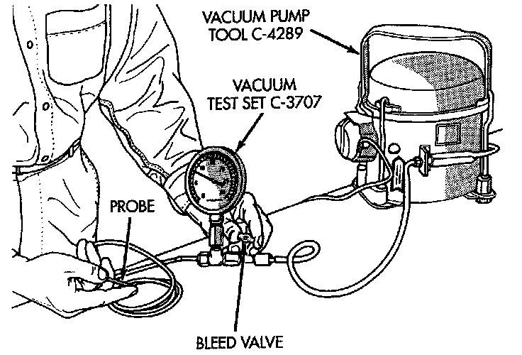

Vacuum System Testing

Vacuum control is used to operate the mode doors in the standard equipment manual temperature control system heater-A/C housing. Testing of the heater-A/C mode control switch operation will determine if the vacuum, and electrical controls are functioning. However, it is possible that a vacuum control system that operates perfectly at engine idle (high engine vacuum) may not function properly at high engine speeds or loads (low engine vacuum). This can be caused by leaks in the vacuum system, or a faulty vacuum check valve.
A vacuum system test will help to identify the source of poor vacuum system performance or vacuum system leaks. Before starting this test, stop the engine and make certain that the problem isn't a disconnected vacuum supply tube at the engine intake manifold vacuum tap or the vacuum reservoir.
Use an adjustable vacuum test set (Special Tool C-3707) and a suitable vacuum pump to test the heater-A/C vacuum control system. With a finger placed over the end of the vacuum test hose probe, adjust the bleed valve on the test set gauge to obtain a vacuum of exactly 27 kPa (8 in. Hg.). Release and block the end of the probe several times to verify that the vacuum reading returns to the exact 27 kPa (8 in. Hg.) setting. Otherwise, a false reading will be obtained during testing.